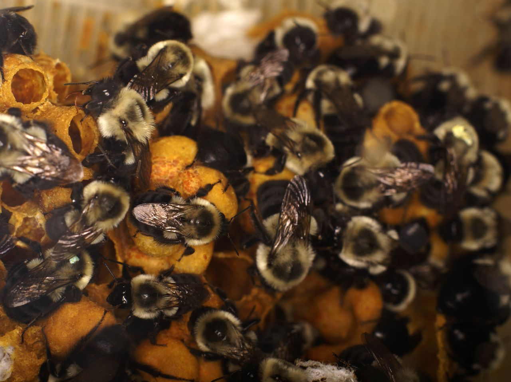
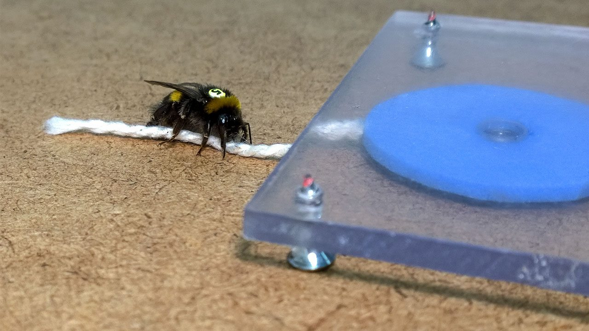

Giraffe facts
- "Giraffes are the tallest mammals on Earth. Their legs alone are taller than many humans—about 6 feet."
- Giraffes spend most of their lives standing up; they even sleep and give birth standing up.[5]
- Giraffes are not to be messed with. Watch this video of giraffe kicking a lion.
Coati facts
- "Coatis feed by using their long noses, poking them under rocks and into crevices. They also use their long claws to dig holes or tear apart rotting logs."
- "Their ankles are double jointed and extremely flexible, enabling the animal to descend trees headfirst."
- "The species is very social, living in bands of up to 30 (although 12 is more typical), which are usually related females and their young, Adult males are typically solitary."
- source
Bumblebee facts
- Bumblebees are seriously .smarts
- Only the worker bees and Queen have a sting.
- Bumblebees are social animals and colonies can contain up to 150 individual bees. This is however quite small compared to honeybees that can have nests with over 50,000 bees.


